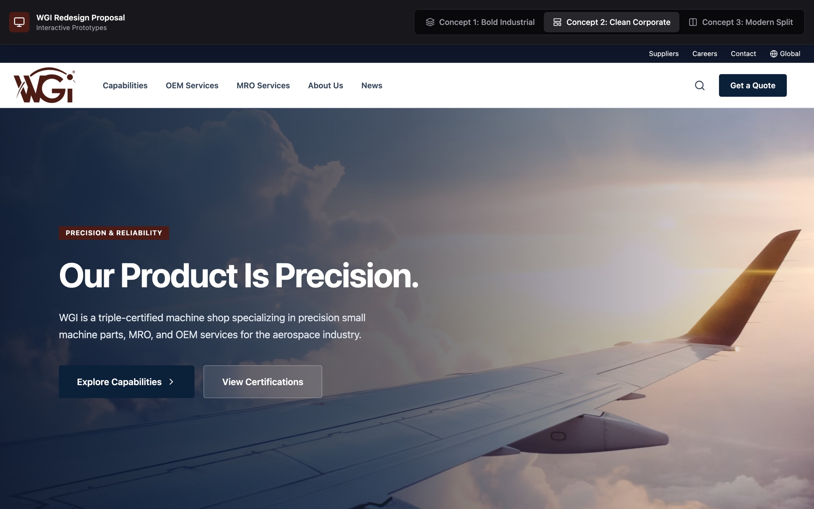
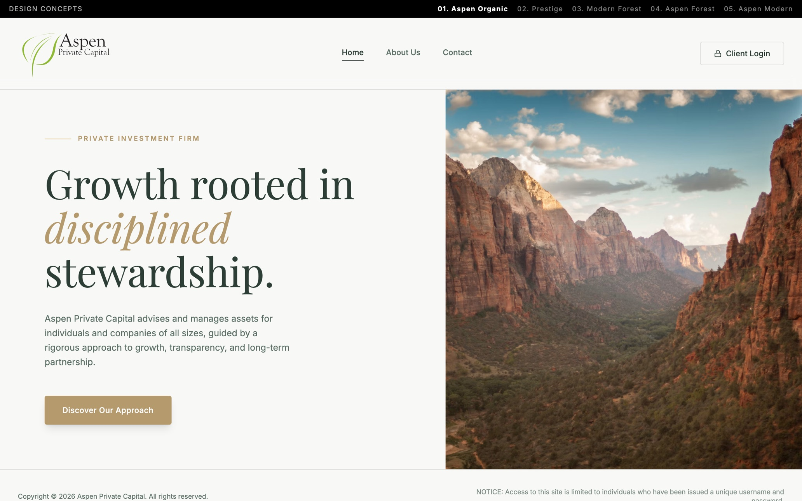
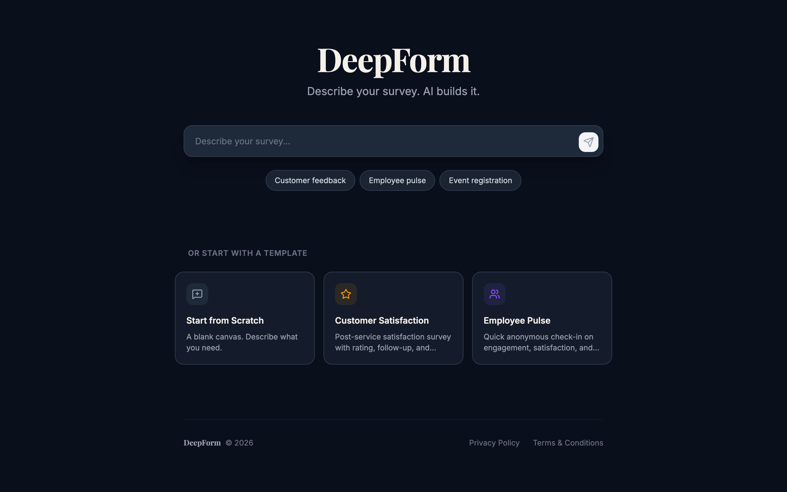
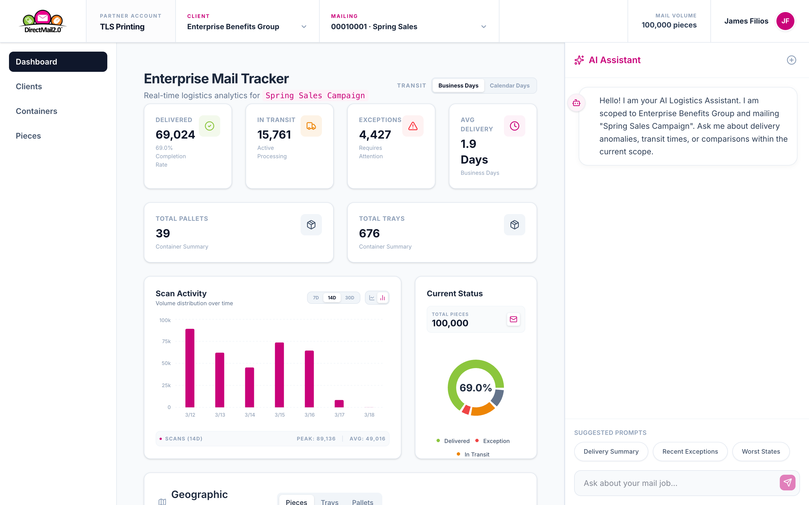
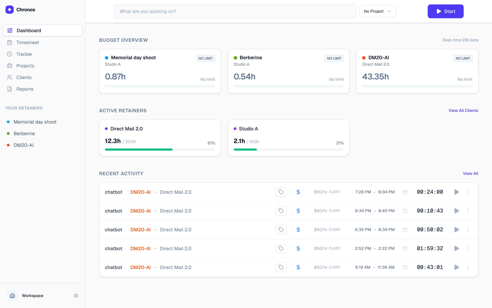

01
WGI — Website Redesign
Sector: Aerospace · Concept, 3 directionsConcept & UI design. Three distinct concept directions reimagining the web presence of an aerospace engineering firm.

I take products and brands from concept to polished, shippable interface — from aerospace and finance site redesigns to full end-to-end SaaS applications.
Concept & UI design. Three distinct concept directions reimagining the web presence of an aerospace engineering firm.

Concept & UI design. Concept directions recreating the site for an investment capital firm — refined, trust-forward, and considered.

Frontend & UX design. The frontend for a survey-taking SaaS application — clean, focused, and built to keep respondents moving.

End-to-end product design. An AI-powered mail-tracking platform that surfaces analytics across large mail campaigns. I designed the entire application.

UI & UX design. A simple, uncluttered time-tracking application — designed and built to make logging hours effortless.

I'm currently open to full-time roles and select freelance work. The fastest way to reach me is email.